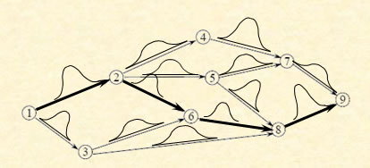

Optimal learning addresses the challenge of how to collect information as efficiently as possible, primarily for settings where collecting information is time consuming and expensive. Some sample applications include:
- How do you discover the best drug to treat a disease, out of the thousands of potential combinations?
- What is the best price to charge for a product on the internet?
- What the best set of parameters (diameter of a tube, size of a plate, length of a component, pressure, temperature, concentration) to make a particular device or chemical process work the best?
- What is the highest concentration of a disease in the population?
- What are the best labor rules or terms in a customer contract to maximize profits in a time-consuming business simulator?
- Where should we collect information about the links of a graph so we get can find the best path to respond to an emergency?
Each of these problems require making observations (measurements) to determine which choice works the best. The challenge is that measurements take time and/or cost money, which means we have to collect this information carefully.
Optimal Learning is a rich field that includes contributions from different communities. At the moment, this website focuses on our work on the knowledge gradient, a simple, elegant concept for collecting information. As the website evolves, we will provide a more complete representation of the different frameworks and methods that have evolved for solving this important problem class.
Use the book cover to visit Amazon for the book. Course instructors may order an examination copy directly from Wiley via the Wiley product page. A review by Steve Chick appeared in the November 2012 issue of Informs Journal on Computing (download the review). A short article from OR/MS Today is also available (read the OR/MS Today article).
The knowledge gradient
Below we provide an overview of our current research in the knowledge gradient, organized as follows:
- A brief introduction
- The knowledge gradient for different belief models
- The knowledge gradient for online and offline learning
- Learning with continuous alternatives (parameter tuning)
- Learning on graphs and linear programs
- Learning in the presence of a physical state
- Learning with a robust objective function
A brief introduction
Our research has focused on the idea of the knowledge gradient, which measures the marginal value of a measurement in terms of the value of the information gained by the measurement. The measurement may require field experimentation or running a time consuming simulation (some business simulators take days to run). We model the economic decision we are trying to make, and then identify the information that has the highest impact on the economic problem.
The knowledge gradient does not identify the best choice - it identifies the measurement which will do the most to identify the best choice. If we have five alternatives (as shown to the right) with different levels of uncertainty about each alternative, we want to evaluate the alternative that offers the greatest chance of improving the final solution. So alternative 2 may be much more attractive to evaluate than alternatives 3 and 4.
The power of the knowledge gradient is the ease with which it can be applied to a wide range of settings. We use a Bayesian model that captures expert belief, making it possible to provide meaningful guidance right from the beginning. We have found that most applications exhibit correlated beliefs, which is to say that trying one alternative can teach us something about other alternatives. This makes it possible to provide meaningful guidance to find the best out of 10,000 molecular compounds after just 100 experiments.
We are developing methods to handle problems where the number of potential alternatives might number in the tens of thousands (of molecules), hundreds of thousands (of features for a car or computer) or infinite (setting the continuous parameters to optimize a device). Applying the knowledge gradient to find the best of five or ten alternatives with independent beliefs can be done in a spreadsheet. For larger problems, we need specialized algorithms. For example, if we are trying to find the hot spot (in red) of the surface to the left (below), we have to find the maximum of the knowledge gradient surface shown on the right.

The knowledge gradient for different belief models
To formulate an optimal learning problem, we have to first create a belief model. It is useful to divide these models into three fundamental classes:
- Lookup table
- Parametric models - We can further divide these according to:
- Linear
- Low-dimensional (small number of parameters)
- High-dimensional - Here we use a sparse-additive belief model
- Nonlinear
- In addition to general nonlinear models, we study special cases such as logistics regression.
- Linear
- Nonparametric models - Our work as of this writing has addressed:
- General nonlinear models using a sampled belief model
- Logistics regression for classification
Brief discussions of each are given below.
Lookup table belief models
Let an alternative x be a discrete number 1, ..., M where M is not too large (say less than 1000). We may have a belief mu_x about each x. If we have independent beliefs, the knowledge gradient is particularly easy to apply. An easy tutorial is contained in the article
If you are interested in the real theory, see
In most applications, our belief about mu_x may be correlated with our belief about another alternative, x'. We consider this one of the most powerful advantages of the knowledge gradient over other methods, including the classical bandit theory. This idea is described in the tutorial above, but the original paper on this topic is
P. Frazier, W. B. Powell, S. Dayanik, “The Knowledge-Gradient Policy for Correlated Normal Beliefs,” Informs Journal on Computing, Vol. 21, No. 4, pp. 585-598 (2009) (c) Informs (Click here for online supplement)
Parametric belief models
There are many problems where there may be a huge number of alternatives. For example, imagine we are trying to determine the best ad to put on a website. We would like to predict how many ad clicks an ad will receive based on attributes of the ad (the topic, number of words, graphics, ...). We may pose a regression model (let's assume a linear regression), but we do not know the values of the regression parameters. The goal is to try different ads to learn these parameters as quickly as possible. Once we know the parameters, we can estimate the value of thousands of different ads to determine the ones that are best to put on the website.
The knowledge gradient can be adopted to the problem of making choices to learn a regression model. This work was first done in the context of finding the best molecular compound to cure cancer (see Drug Discovery). The work is described in
D. Negoescu, P. Frazier and W. B. Powell, “The Knowledge Gradient Algorithm for Sequencing Experiments in Drug Discovery”, Informs Journal on Computing, Vol. 23, No. 3, pp. 346-363, 2011. (Click here for online supplement)
We have generalized this work to high-dimensional models where we use sparse-additive linear models. Here, we combine the frequentist Lasso regularization methodology to identify the most important parameters:
There are many applications that require models that are nonlinear in the parameters. Our work here includes:
Nonparametric belief models
We have extended the knowledge gradient to two classes of nonparametric belief models. Our first effort used an approximation method based on estimating a function at different levels of aggregation. If we want an estimate of the function at an arbitrary query point x, we compute a set of weights w^g_x for each level of aggregation g for each query point x based on the total sum of squares error (variance plus bias).
We can use this belief model to estimate a function that we are trying to maximize. The knowledge gradient has to compute the expected value of an observation, taking into account the possible change in the estimate of the function at each level of aggregation, as well as the possible change in the weights w^g_x which have to be recomputed after each observation. This work is summarized in
We also computed the knowledge gradient when we are using kernel regression to estimate a function. This work is based on the paper above (Mes et al.), and is summarized in
We recently derived the knowledge gradient when using a local parametric approximation called DC-RBF (Dirichlet Clouds with Radial Basis Functions):
The knowledge gradient for online and offline learning
Offline learning arises when we have a budget for finding the best possible solution, after which have to use the solution in a production setting. Online learning arises when we are in a production setting, and we have to live with the costs or rewards, but we want to learn as we go. In this setting, we have to make a tradeoff between the costs or rewards we receive, and the value of information that we acquire that we can use for future decisions.
It turns out that there is a very simple, elegant relationship between the knowledge gradient for offline learning, and the knowledge gradient for online learning. Imagine that we have a finite-horizon online learning problem where we have a total of N measurements, and we have already learned n. If v^{off}_x is the offline knowledge gradient for alternative x, then the online knowledge gradient is given by
v^{online}_x = \theta^n_x + (N-n) v^{offline}_x
where \theta^n_x is our current estimate of the value of alternative x after n measurements. This makes it possible to compute the knowledge gradient for problems with correlated beliefs.
For more, see
Learning with continuous alternatives
A common problem arises when we have to tune a set of continuous set of parameters. This often arises when we have to find the set of parameters that will produce the best results for a model. You may want to minimize costs, minimize delays or find the best match between a model and historical metrics.
Learning on graphs and linear programs
Imagine that you want to find the shortest path between two points, but you do not know the times on the links. You have a way of collecting information, but it is expensive, and you have a limited amount of time to learn the best path. Which links should you learn about to have the greatest impact on your ability to find the shortest path?
The knowledge gradient can be computed for each link in the network using at most two shortest path calculations (and often one).
For more information, see
For a more theoretical treatment of learning the coefficients of linear programs, see
Learning in the presence of a physical state
Ryzhov, I. O., W. B. Powell, “Approximate Dynamic Programming with Correlated Bayesian Beliefs,” Forty-Eighth Annual Allerton Conference on Communication, Control, and Computing, September 29 – October 1, 2010, Allerton Retreat Center, Monticello, Illinois., IEEE Press, pp. 1360-1367. This paper introduces the idea of using the knowledge gradient within a dyamic program, which effectively means in the presence of a physical state. This paper uses a discrete, lookup table representation of the belief model.
Ryzhov, I. O. and W. B. Powell, “Bayesian Active Learning With Basis Functions,” SSCI 2011 ADPRL - 2011 IEEE Symposium on Adaptive Dynamic Programming and Reinforcement Learning, Paris, April, 2011. - This paper uses the knowledge gradient for dynamic programs where the value function is now approximated using a linear model.
Learning with a robust objective
A fresh perspective of learning is to introduce a mini-max objective. Instead of maximizing the expected value of a measurement, we can adapt the knowledge gradient to maximize the worst outcome. An initial investigation of this idea is
Downloadable software
We offer the following modules for download:
- The knowledge gradient for independent, normal beliefs — This is the simplest case. Spreadsheet implementation (independent normal beliefs).
- Optimal Learning Calculator — A spreadsheet-based package that provides an introduction to learning and a variety of policies for learning. For more information, see the calculator section. We are developing an online tutorial, but at the moment you are on your own. Stay tuned. (Note: a Java library change may cause path issues on some machines; an update is planned.)
- Matlab implementation of the knowledge gradient for correlated beliefs using a lookup table belief model — Algorithm and example (ZIP). Updated March 11, 2013.
- Matlab implementation of the knowledge gradient for correlated beliefs using a linear regression belief model — KGLinRegression (ZIP). Updated May 9, 2012.
In 2015, we introduced MOLTE, Modular Optimal Learning Testing Environment, which is a Matlab-based environment for testing a wide range of learning algorithms for problems with discrete alternatives, on a wide range of problems.
- Each problem, and each algorithm, is coded in its own .m file, making it easy for users to add new problems, and new algorithms.
- Users use a spreadsheet to indicate which algorithms are to be tested on which class of problems.
- The user can specify tunable parameters, or ask the package to optimize tunable parameters.
- Any problem can be tested using an offline ("ranking and selection") or online ("multiarmed bandit") objective function.
Castle Lab software page (external downloads).
Finite-time analysis for the knowledge gradient policy (paper) — includes the MOLTE environment and initial tests.
Applications
This sections highlights some applications we have encountered, partly from research, partly from teaching, and partly from our own need for optimal learning algorithms in the context of comparing and tuning algorithms.
Drug discovery
The knowledge gradient, using a parametric belief model, was used to sequence experiments while searching for the best compound to cure a form of Ewing's sarcoma. For more on this project, see the Castle Lab Drug Discovery page.
May the best man win
Finding the best team to compete in an invent.
Finding the best energy saving technology
Materials science
Student projects from ORF 418 — Optimal Learning
The student projects performed in the course taught at Princeton (ORF 418-Optimal Learning) produced a wide range of interesting topics. Below is a partial list:
Learning Optimal Levels for the Reservoir in Yunnan, China
Ethiopian Famines— Learning Solutions for Sustainable Agriculture
Finding Effective Strategies in a Multi-Strategy Hedge Fund
Waffles and Dinges and Knowledge Gradient, Oh My! Evaluating the Knowledge Gradient Algorithm with Linear Beliefs for the Street Cart Vendor Problem
Optimal Tuning of a Particle Swarm Algorithm
The Ultimate Set List – Using the knowledge gradient to find the best band set to maximize DVD sales after a band performance
Competing with Netflix: Recommending the Right Movie
Learning Optimal Tolls for the Lincoln Tunnel: Solving Port Authority Pricing and Optimal Driver Commute
Optimizing the Price of Apps on the iTunes Store
Ordering Products for Sale in a Small Business Setting: Learning Policies for Online Subset Selection in the Context of Complementary and Substitute Goods
Optimizing Polling Strategies for Election Campaigns
Learning Matching Strategies for Dating Sites
To Pick a Champion: Ranking and Selection by Measuring Pairwise Comparisons
The Inverse Protein Folding Problem: An Optimal Learning Approach
Learning When to Punt on 4th and Short
Selecting a Debate Team using Knowledge Gradient for Correlated Beliefs
The Optimal Learning course at Princeton University
ORF 418, Optimal Learning, is an undergraduate course taught in the department of Operations Research and Financial Engineering at Princeton University. Classes typically run between 30 and 40 students, all of whom would have taken a course in probability and statistics.
While the theory behind optimal learning is fairly deep and could only be taught at the graduate level, the modeling concepts and techniques of optimal learning can easily be taught at the undergraduate level to serious students.
Syllabus (2012) - Princeton enjoys 12 week semesters, so this syllabus may look a bit short to many faculty. However, it is easy to add lectures using material from the book. Note that the later chapters are more advanced.
Problem sets (2012) - This zipped file includes latex files and associated software (spreadsheets and matlab code). Most of my exercises are included in the book, but I continue to revise. I give weekly problem sets and a midterm, after which the students take on a course project.
Course project - Students are encouraged to work in teams of two. The project requires that they pick a problem where the collection of information is time-consuming or expensive. The project has three requirements: initial problem description, a summary of the math model and learning policies, and then the final report. You need to use care to make sure they pick good problems. I use the last three lectures (depending on the size of the class) to allow students to present their projects (without numerical results), so that the rest of the class sees the diversity of problems.
Additional readings
Below is a summary of research papers that we have produced while pursuing this work.
Tutorials
Powell, W.B."Optimal Learning: Optimization in the Information Age," article in OR/MS Today (2012)
This is a short, equation-free article introducing the basic concept of optimal learning, which appeared in the Informs news magazine, OR/MS Today.
Powell, W. B. "The Knowledge Gradient for Optimal Learning," Encyclopedia for Operations Research and Management Science, 2011 (c) John Wiley and Sons.
This is a shorter but more up-to-date tutorial on optimal learning than the tutorial listed next. The presentation focuses more on the knowledge gradient.
Powell, W. B. and P. Frazier, "Optimal Learning," TutORials in Operations Research, Chapter 10, pp. 213-246, Informs (2008). (c) Informs
This was an invited tutorial on the topic of optimal learning, and represents a fairly easy introduction to the general field of information collection. Although the page constraints limited the scope, it covers the central dimensions of information collection, along with an overview of a number of the most popular heuristic policies. Of course, we include an introduction to the knowledge gradient concept.
The knowledge gradient with independent beliefs
Frazier, P., W. B. Powell and S. Dayanik, “A Knowledge Gradient Policy for Sequential Information Collection,” SIAM J. on Control and Optimization, Vol. 47, No. 5, pp. 2410-2439 (2008).
The knowledge gradient policy is introduced here as a method for solving the ranking and selection problem, which is an off-line version of the multiarmed bandit problem. Imagine that you have M choices (M is not too large) where you have a normally distributed belief about the value of each choice. You have a budget of N measurements to evaluate each choice to refine your distribution of belief. After your N measurements, you have to choose what appears to be the best based on your current belief. The knowledge gradient policy guides this search by always choosing to measure the choice which would produce the highest value if you only have one more measurement (the knowledge gradient can be viewed as a method of steepest ascent). The paper shows that this policy is myopically optimal (by construction), but is also asymptotically optimal, making it the only stationary policy that is both myopically and asymptotically optimal. The paper provides bounds for finite measurement budgets, and provides experimental work that shows that it works as well as, and often better, than other standard learning policies.
The knowledge gradient with correlated beliefs (offline learning, discrete alternatives)
P. Frazier, W. B. Powell, S. Dayanik, “The Knowledge-Gradient Policy for Correlated Normal Beliefs,” Informs Journal on Computing, Vol. 21, No. 4, pp. 585-598 (2009) (c) Informs
The knowledge gradient policy is a method for determining which of a discrete set of measurements we should make to determine which of a discrete set of choices we should make. Most of the applications that we have considered introduce the dimension of correlated beliefs. If we evaluate the level of contamination in one location and it measures high, we are likely to raise our belief about the level of toxin in nearby locations. If we test a machine for airport security that can sense explosives and it works poorly, we might lower our evaluation of other devices that might use similar technologies (e.g. a particular material or sensor within the device). This article shows how to compute the knowledge gradient for problems with correlated beliefs. The paper shows that just as with problems with independent beliefs, the knowledge gradient is both myopically and asymptotically optimal. Experimental work shows that it can produce a much higher rate of convergence than the knowledge gradient with independent beliefs, in addition to outperforming other more classical information collection mechanisms.
(click here to download paper) (Click here for online supplement)
The S-curve effect — Handling the nonconcavity of information
Frazier, P. I., and W. B. Powell, “Paradoxes in Learning: The Marginal Value of Information and the Problem of Too Many Choices,” Decision Analysis, Vol. 7, No. 4, pp. 378-403, 2010.
The value of information can be a concave function in the number of measurements, but for many problems it is not, and instead follows an S-curve. A little bit of information may teach you nothing, and you may have to make an investment in information beyond a certain threshold to actually have an impact. We investigate the economic implications of the S-curve effect, showing that it is possible to have too many choices. We then revisit the knowledge gradient algorithm, which allocates measurements based on the marginal value of information. The knowledge gradient can produce poor learning results in the presence of an S-curve. We propose the KG(*) algorithm, which maximizes the average value of information, and show that it produces good results when there is a significant S-curve effect.
From offline learning to online learning
I. Ryzhov, W. B. Powell, P. I. Frazier, “The knowledge gradient algorithm for a general class of online learning problems,” Operations Research, Vol. 60, No. 1, pp. 180-195 (2012).
The knowledge-gradient policy was originally derived for off-line learning problems such as ranking and selection. Considerable attention has been given to the on-line version of this problem, known popularly as the multiarmed bandit problem, for which Gittins indices are known to be optimal for discounted, infinite-horizon versions of the problem. In this paper, we derive a knowledge gradient policy for on-line problems, and show that it very closely matches the performance of Gittins indices for discounted infinite horizon problems. It actually slightly outperforms the best available approximation of Gittins indices (by Gans and Chick) on problems for which Gittins indices should be optimal. The KG policy is also effective on finite horizon problems. The only policy which is competitive with KG seems to be interval estimation, but this requires careful tuning of a parameter. The KG policy also works on problems where the beliefs about different alternatives are correlated. The KG policy with independent beliefs is extremely easy to compute (we provide closed-form expressions for the case with normal rewards), and requires a simple numerical algorithm for the case with correlated beliefs.
The knowledge gradient using a linear belief model
D. Negoescu, P. Frazier and W. B. Powell, “The Knowledge Gradient Algorithm for Sequencing Experiments in Drug Discovery”, Informs Journal on Computing, Vol. 23, No. 3, pp. 346-363, 2011. (c) Informs
This paper describes a method for applying the knowledge gradient to a problem with a very large number of alternatives. Instead of creating a belief about each alternative (known as a "lookup table belief model"), we represent our belief about an alternative using linear regression (known as a "parametric belief model"). The method is motivated by the need to find the best molecular compound to solve a particular problem (e.g. killing cancer cells). There is a base compound with a series of sites (indexed by j) and a series of small sequences of atoms ("substituents") indexed by i. Let X_{ij} = 1 if we put substituent i at site j, and let theta_{ij} be the impact of this combination on the performance of the compound. The goal is to choose compounds to test that allow us to estimate the parameters theta as quickly as possible.
(click here to download main paper) (Click here for online supplement)
Yan Li, Han Liu, W.B. Powell, “The Knowledge Gradient Policy using a Sparse Additive Belief Model,” Working paper, Department of Operations Research and Financial Engineering, Princeton University, 2015.
This paper extends the work on optimal learning with a linear belief model, to the setting where the belief model is a high-dimensional, sparse linear belief model. The paper puts a prior on the distribution of indicator variables that capture whether a coefficient is zero or not. The work is motivated by a problem involving learning the structure of RNA molecules.
The Knowledge Gradient Policy using a Sparse Additive Belief Model (Li, Liu, Powell)
Yan Li, Kristopher G. Reyes, Jorge Vazquez-Anderson, Yingfei Wang, Lydia M Contreras, Warren B. Powell, “A Knowledge Gradient Policy for Sequencing Experiments to Identify the Structure of RNA Molecules Using a Sparse Additive Belief Model,” Working paper, Department of Operations Research and Financial Engineering, Princeton University, 2015.
This paper applies the sparse KG algorithm (see paper immediately above) to the problem of identifying the structure of RNA molecules. It uses a biophysical model to develop the structure that is used in developing the prior and the underlying belief model.
KG for Sequencing Experiments for RNA using SpKG (Li et al.)
The knowledge gradient using a nonlinear belief model
Si Chen, K-R G. Reyes, M. Gupta, M. C. McAlpine, W. B. Powell, “Optimal Learning in Experimental Design Using the Knowledge Gradient Policy with Application to Characterizing Nanoemulsion Stability,” SIAM J. Uncertainty Quantification (to appear)
This paper addresses the problem of learning when the belief model is nonlinear in the parameters, motivated by a problem in materials science. The paper uses the strategy of solving a sampled belief model, where the prior is represented by a sample of possible parameters (rather than our standard use of multivarite normal distributions).
Optimal Learning in Experimental Design using the Knowledge Gradient Policy (Chen et al.)
The knowledge gradient for nonparametric belief models
Mes, M., P. I. Frazier and W. B. Powell, “Hierarchical Knowledge Gradient for Sequential Sampling,” J. Machine Learning Research, Vol. 12, pp. 2931-2974
We develop the knowledge gradient for optimizing a function when our belief is represented by constants computed at different levels of aggregation. Our estimate of the function at any point is given by a weighted sum of estimates at different levels of aggregation.
Hierarchical Knowledge Gradient for Sequential Sampling (Mes, Frazier, Powell)
E. Barut and W. B. Powell, “Optimal Learning for Sequential Sampling with Non-Parametric Beliefs"
This paper develops and tests a knowledge gradient algorithm when the underlying belief model is nonparametric, using a broad class of kernel regression models. The model assumes that the set of potential alternatives to be evaluated is finite.
Optimal Learning for Sequential Sampling with Non‑Parametric Belief Models (Barut, Powell)
B. Cheng, A. Jamshidi, W. B. Powell, Optimal Learning with a Local Parametric Approximations, J. Global Optimization (to appear)
The knowledge gradient is developed for a locally parametric belief model. This model, called DC-RBF, approximates a function by representing the domain using a series of clouds, which avoids storing the history.
Optimal Learning with Local Parametric Belief Models (Cheng, Jamshidi, Powell)
Learning while learning
There are applications where the underlying alternative is steadily getting better in the process of observing it. An athlete improves over time, as do teams that work together over time. A product with a specific set of features might see sales steadily improve as word of mouth gets around. Often, we do not have time to wait for a process to reach its asymptotic limit, so we can fit a function that tries to guess (imperfectly) this limit. This problem arose in a business simulator which used approximate dynamic programming to learn a policy, while we were tuning various business parameters. This work is summarized in
P. Frazier, W. B. Powell, H. P. Simao, "Simulation Model Calibration with Correlated Knowledge-Gradients," Winter Simulation Conference, December, 2009.
A common challenge in the calibration of simulation model is that we have to tune several continuous parameters. This is our first application of the knowledge gradient algorithm with correlated beliefs to the problem of parameter tuning for simulation models. A single run of the model (which uses adaptive learning from approximate dynamic programming) requires more than a day, so the paper also introduces methods to product results without a full run. A Bayesian model is set up to capture the uncertainty in our beliefs about the convergence of the model. The method is illustrated in the tuning of two continuous parameters, which required approximately six runs of the model.
Learning when the alternatives are continuous
This paper can handle low-dimensional vectors of continuous parameters.
Scott, Warren, P. I. Frazier, and W. B. Powell. "The Correlated Knowledge Gradient for Simulation Optimization of Continuous Parameters Using Gaussian Process Regression." SIAM Journal on Optimization 21, No. 3 (2011): 996-1026.
We have previously developed the knowledge gradient with correlated beliefs for discrete alternatives. This paper extends this idea to problems with continuous alternatives. We do this by developing a continuous approximate of the knowledge gradient. This produces a nonconcave surface that we have to maximize. Local minima are located close to points that have been previously measured, so we use these points to guess at the locations of local maxima and then use a simple gradient search algorithm starting from each of these points. A proof of convergence is provided. We use the distances between local minima to perform scaling of the steepest descent algorithm. We compare the method against Huang's adaptation of sequential kriging to problems with noisy measurements.
Learning on graphs and linear programs
I.O. Ryzhov, W.B. Powell, "Information collection on a graph," Operations Research, Vol 59, No. 1, pp. 188-201, 2011. (c) Informs
We derive a knowledge gradient policy for an optimal learning problem on a graph, in which we use sequential measurements to re ne Bayesian estimates of individual arc costs in order to learn about the best path. This problem differs from traditional ranking and selection, in that the implementation decision (the path we choose) is distinct from the measurement decision (the edge we measure). Our decision rule is easy to compute, and performs competitively against other learning policies, including a Monte Carlo adaptation of the knowledge gradient policy for ranking and selection.
Ryzhov,I.O., W. B. Powell, “Information Collection in a Linear Program,” SIAM J. Optimization (to appear)
Linear programs often have to be solved with estimates of costs. This theory paper describes an adaptation of the knowledge gradient for general linear programs, extending our previous paper on learning the costs on arcs of a graph for a shortest path problem.
Information Collection for Linear Programs with Uncertain Objective Coefficients (Ryzhov, Powell)
B. Defourny, I. O. Ryzhov, W. B. Powell, “Optimal Information Blending with Measurements in the L2 Sphere"
This (primarily theoretical) paper extends the paper above on learning the coefficients of a linear program. We consider the situation where information is collected in the form of a linear combination of the objective coefficients, subject to random noise. We can choose the weights in the linear combination, a process we refer to as information blending. The paper presents two optimal blending strategies: an active learning method that maximizes uncertainty reduction, and an economic approach that maximizes an expected improvement criterion. Semidefinite programming relaxations are used to create efficient convex approximations to the nonconvex blending problem.
Optimal Information Blending with Measurements in the L2 Sphere (Defourny, Ryzhov, Powell)
Learning in the presence of a physical state
This paper introduces the idea of using the knowledge gradient within a dyamic program, which effectively means in the presence of a physical state. This paper uses a discrete, lookup table representation of the belief model.
This paper uses the knowledge gradient for dynamic programs where the value function is now approximated using a linear model.
Nested batch learning
Yingfei Wang, K. G. Reyes, K. A. Brown, C. A. Mirkin, W. B. Powell, “Nested Batch Mode Learning and Stochastic Optimization with an Application to Sequential Multi-Stage Testing in Materials Science,” SIAM J. Scientific Computing (to appear)
Motivated by a problem in laboratory experimentation, this paper considers the problem where there is an initial choice (e.g. size and shape) followed by a series of experiments (e.g. testing different densities) that can be run in batch model. The paper develops an approximation of the knowledge gradient for batch learning to guide the initial discrete decision (size and shape). The problem is closely related to learning in the presence of a physical state, since the initial decision (size and shape) set the stage for the second decision (density) that is run in batch.
Nested Batch Mode Learning and Stochastic Optimization (Wang et al.)
General theory
P. Frazier and W. B. Powell, “Consistency of Sequential Bayesian Sampling Policies” SIAM J. Control and Optimization, Vol. 49, No. 2, 712-731 (2011). DOI: 10.1137/090775026
We consider Bayesian information collection, in which a measurement policy collects information to support a future decision. We give a sufficient condition under which measurement policies sample each measurement type infinitely often, ensuring consistency, i.e., that a globally optimal future decision is found in the limit. This condition is useful for verifying consistency of adaptive sequential sampling policies that do not do forced random exploration, making consistency difficult to verify by other means. We demonstrate the use of this sufficient condition by showing consistency of two previously proposed ranking and selection policies: OCBA for linear loss, and the knowledge-gradient policy with independent normal priors. Consistency of the knowledge-gradient policy was shown previously, while the consistency result for OCBA is new.
Wang, Y. W. B. Powell, K. Reyes, R. Schapire, “Finite-time analysis for the knowledge-gradient policy, and a new testing environment for optimal learning,” Working paper, Department of Operations Research and Financial Engineering, Princeton University.
This paper makes two contributions. First, it provides the first finite-time bound on the performance of the knowledge gradient for offline ranking and selection problems. Second, it describes the first general-purpose testing environment, MOLTE, which provides a large library of problems, each implemented in its own .m file, and a library of algorithms that can be applied to these problems (each of which is also provided in its own .m file). This makes it very easy for others to add new problems, and new algorithms.